Signal Harbor · development cycle
Monthly performance against benchmark for the family council
One new project run end to end in Signal Harbor: from Mei Chen's own words to a live pipeline, an approved dashboard and delivery, with every screen captured as it happened.
21steps
about 45minutes, first words to delivery live
4people
0.011model cost (USD)
Evergreen Office is a synthetic family office. All data, documents and people are synthetic. Testing mode (low-cost models) on a private test environment, 11 Oct 2026.
The project in one paragraph
Every month the family council wants one page showing how the liquid portfolio EG-LIQUID did against the family benchmark EG-OFFICE-BLEND: portfolio return, benchmark return and the difference in points, ready by the 5th business day so the council can decide whether to rebalance. Today Mei Chen builds it by hand in Excel over two days. In this walkthrough Mei described the need to North. Daniel Foo signed the intent and Mei handed it to Leo Park. Span the architect drafted the design pack and Anita Rao approved it. Span the builder ran it on a copy and checked it against September's issued report (4.17%, 2.71%, 1.46 points): every line matched. A corrected pack version 2 was approved and rerun, and the pipeline went live. Lumen proposed a starter dashboard; Daniel approved it and it was set up for Consume and a monthly council email. Two things did not work: Mei's own tile (the difference) could not be added, and the approved dashboard does not appear in Consume. The fifteen findings at the end say what to fix.
The people
| Person | Role in this project | Touch points |
|---|
| Mei Chen | Business owner: describes the need and the sources, provides samples and the benchmark report, shapes the dashboard, sets up delivery | 9 |
| Daniel Foo | Sponsor: signs the intent, approves the dashboard and each delivery channel | 4 |
| Anita Rao | Head of data: approves the design pack (and the plan drawn from it) | 3 |
| Leo Park | Data engineer: confirms systems, answers the few questions, marks the samples, builds and takes the pipeline live | 11 |
The sources
| File | What it holds | How it arrives |
|---|
| administrator_positions_2026-09-30.xlsx | Harbourline Fund Services month-end positions and market values, 30 Sep 2026 (29 positions; EG-LIQUID 41,200,000) | Upload, monthly, around the 2nd business day |
| index_levels_2026-08_09.csv | Global equity index and global bond index daily levels, 3 Aug to 30 Sep 2026 (equity 1027.17 to 1074.56; bonds 1031.86 to 1041.22) | Upload, monthly |
| northgate_evergreen_growth_I_2026-09-30_final.pdf | Evergreen Growth I statement, final (amended), net asset value 10,180,000 | Email, uploaded monthly |
| bluewater_evergreen_income_II_2026-09-30_final.pdf | Evergreen Income II statement, final, 6,400,000 | Email, uploaded monthly |
| kestrel_macro_2026-09-30_estimate.pdf | Kestrel Ridge Macro Fund statement, estimate, 7,320,000 | Email, uploaded monthly |
| saltmarsh_fund_II_2026-09-30_final.pdf | Saltmarsh Infrastructure Fund II statement, 9,950,000 (not yet confirmed) | Email, uploaded monthly |
| monthly_performance_report_2026-09.pdf | Last month's report as issued: portfolio 4.17%, Office blend 2.71%, difference 1.46 pts; legs 42 / 28 / 30% | Upload, as the benchmark to check against |
Timeline of the cycle
01 Build landing · 7 s02 New project · 9 s03 Intent with North · 9 min 30 s04 Daniel signs the intent · 18 s05 Hand over to the data engineer · 21 s06 Architecture: what I already know, confirm the systems · 16 s07 Architecture: the few questions · 21 s08 Architecture: samples (upload the Excel, mark the PDF fields) · 53 s09 Architecture: the design pack and the mapping sheet · 31 s10 Anita approves the design pack (and the build plan) · 57 s11 Pipelines: connect and run on a copy (automatic) · 13 s12 Pipelines: benchmark request and variance · 19 s13 Pack version 2: Leo corrects the definitions · 28 s14 Approve pack version 2; the builder reruns by itself · 59 s15 Go live · 18 s16 Lumen's starter dashboard · 20 s17 Mei adds one specific tile · 4 min 47 s18 Daniel approves the dashboard · 45 s19 Delivery: Consume and the council email · 2 min 01 s20 Project complete · 20 s21 Consume and the Map show the result · 39 s
| # | Step | Who acted | Time | Outcome |
|---|
| 1 | Build landing | Mei Chen (business owner) | 7 s | Done |
| 2 | New project | Mei Chen (business owner) | 9 s | Done |
| 3 | Intent with North | Mei Chen (business owner), with North (agent) | 9 min 30 s | Done |
| 4 | Daniel signs the intent | Daniel Foo (sponsor) | 18 s | Done |
| 5 | Hand over to the data engineer | Mei Chen, then Leo Park (data engineer) | 21 s | Done |
| 6 | Architecture: what I already know, confirm the systems | Leo Park (data engineer), with Span the architect (agent) | 16 s | Done |
| 7 | Architecture: the few questions | Leo Park (data engineer), with Span the architect (agent) | 21 s | Done, one answer changed outside the screen |
| 8 | Architecture: samples (upload the Excel, mark the PDF fields) | Leo Park (data engineer), with Span the architect (agent) | 53 s | Done |
| 9 | Architecture: the design pack and the mapping sheet | Leo Park (data engineer), with Span the architect (agent) | 31 s | Done, with two open rows |
| 10 | Anita approves the design pack (and the build plan) | Anita Rao (head of data), Leo Park (data engineer) | 57 s | Done, approved twice |
| 11 | Pipelines: connect and run on a copy (automatic) | Leo Park (data engineer), with Span the builder (agent) | 13 s | Done, checks 0 of 1 |
| 12 | Pipelines: benchmark request and variance | Leo Park (data engineer), with Span the builder (agent) | 19 s | Done |
| 13 | Pack version 2: Leo corrects the definitions | Leo Park (data engineer), as Span the architect's reviewer | 28 s | Done, new version |
| 14 | Approve pack version 2; the builder reruns by itself | Anita Rao (head of data), Leo Park (data engineer), with Span the builder (agent) | 59 s | Done |
| 15 | Go live | Leo Park (data engineer), with Span the builder (agent) | 18 s | Done |
| 16 | Lumen's starter dashboard | Mei Chen (business owner), with Lumen (agent) | 20 s | Done, with wrong tiles |
| 17 | Mei adds one specific tile | Mei Chen (business owner), with Lumen (agent) | 4 min 47 s | Not done: tile not added |
| 18 | Daniel approves the dashboard | Mei Chen, then Daniel Foo (sponsor) | 45 s | Done, with a wrong warning |
| 19 | Delivery: Consume and the council email | Mei Chen (business owner), Daniel Foo (sponsor) | 2 min 01 s | Done, no email sent yet |
| 20 | Project complete | Mei Chen (business owner) | 20 s | Done |
| 21 | Consume and the Map show the result | Daniel Foo (sponsor), Anita Rao (head of data) | 39 s | Not as intended: dashboard missing from Consume |
01 · Build landing
Mei Chen (business owner)
Intended
Open the Build centre and start the work from the four-step landing page.
What we did
Signed in as Mei Chen and opened Build.
What happened
The landing shows the four steps (Intent with North, Architecture with Span, Pipelines with Span, Dashboards and delivery with Lumen), the chapters film and the one project already running (Monthly investment report in USD and SGD, live).
Time taken
7 s
If it goes wrong
Company admin (Grace Ong) checks Mei's access to Build.
02 · New project
Mei Chen (business owner)
Intended
Start a new project from Build.
What we did
Clicked New project.
What happened
A new project opens on the Intent step with North; Mei is asked to say what she needs in her own words.
Time taken
9 s
If it goes wrong
Company admin (Grace Ong) if the button is missing for Mei's role.
03 · Intent with North
Mei Chen (business owner), with North (agent)
Intended
Mei says in her own words what she needs, which sources feed it and how each arrives; North drafts the intent of work and the process map as they talk.
What we did
Ten messages by Mei: the need (EG-LIQUID against EG-OFFICE-BLEND, 5th business day), readers and decision, the four sources with how they arrive (Excel export, index CSV, manager PDFs, last month's report, all by upload), the figures and September's reported values (4.17 / 2.71 / 1.46), today's five steps, access, retention and success; then the result layout, the version 2 open point (Raj Patel) and a request to mark the intent ready. Each North proposal was accepted; the process map was confirmed with That's right.
What happened
North asked one question per turn and drafted as it went, e.g. 'Got the September 2026 figures - portfolio return 4.17 %, benchmark return 2.71 %, difference 1.46 points - and noted they should read the same after the load.' It once said 'We still need the version 2 benchmark weights before the pack can be signed'; Mei answered that version 2 is an open point for Raj Patel. After Mei asked, North wrote its closing summary and 'Sign the intent of work' appeared. Gaps: the summary lists each figure as 'no source yet' although Mei named the sources, keeps 'Who should be allowed to see this work?' as unclear although Mei named the four people, and the goal line is cut mid-word ('so the council can de').
Time taken
9 min 30 s
If it goes wrong
Mei corrects any section with North (or the edit link); a wrong figure definition goes to Raj Patel (finance) before signing.
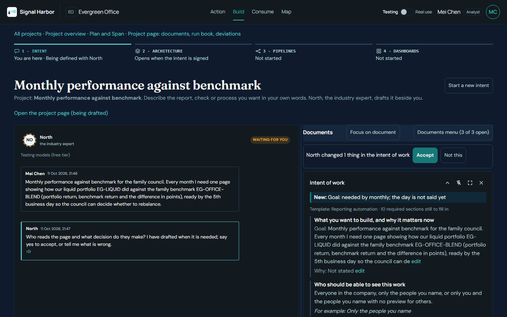
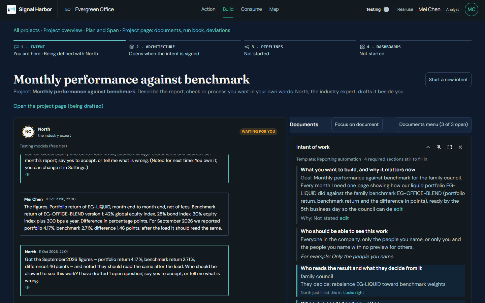
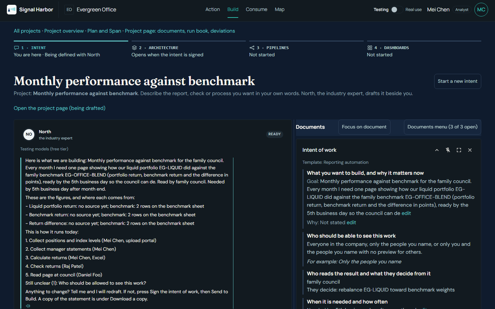
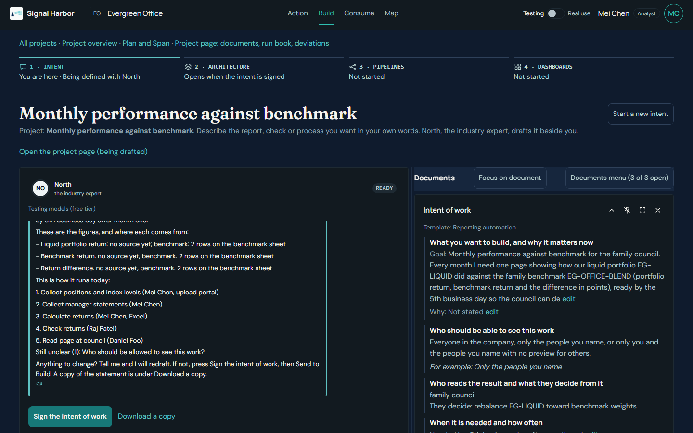
04 · Daniel signs the intent
Daniel Foo (sponsor)
Intended
The sponsor reads the intent of work and signs it, so the data team may start.
What we did
Daniel opened Action, found the card 'Intent to sign', opened the sign page, ticked that he had read every section and pressed Sign intent.
What happened
Action showed the intent to sign. The intent is signed and read-only; Build opens on the project. The signed definition of 'Return difference' reads 'difference in basis points ... (benchmark - portfolio)': North reversed the sign and changed the unit from what Mei said, and the sign page did not flag it.
Time taken
18 s
If it goes wrong
Mei Chen reopens the intent with North and fixes the section Daniel queries; Daniel signs again.
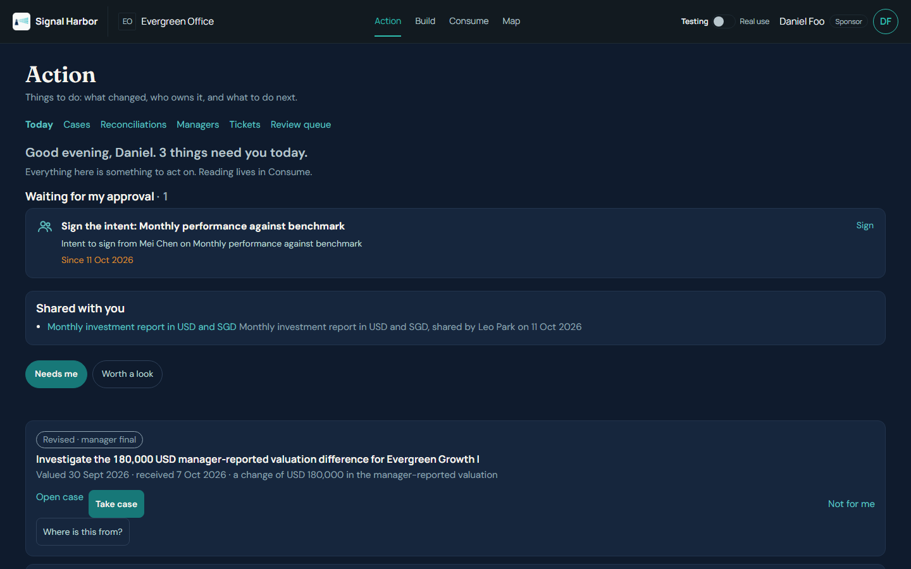
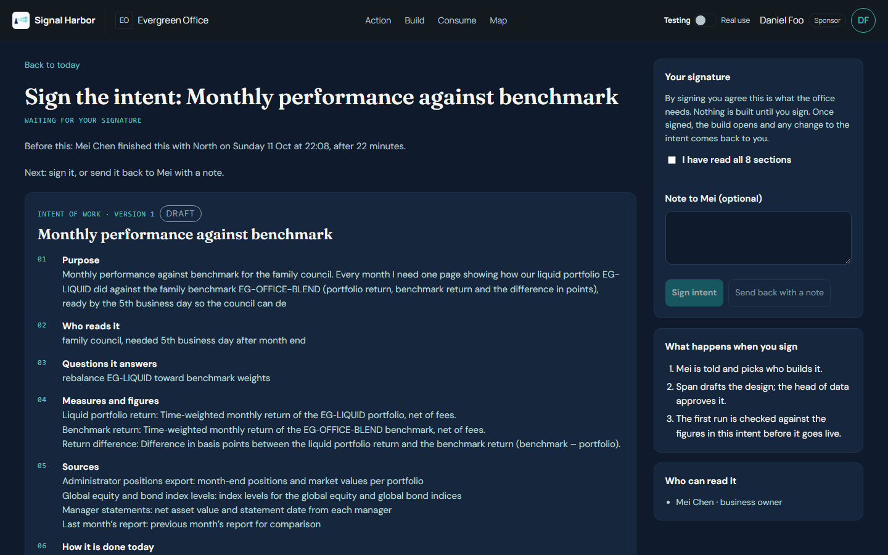
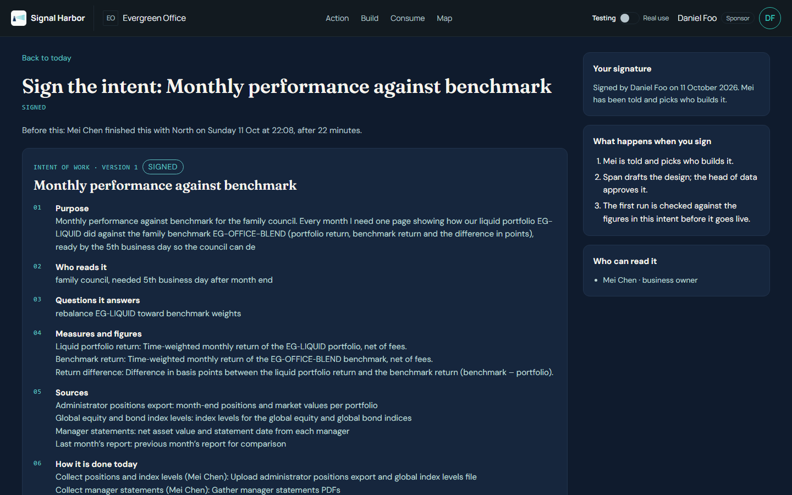
05 · Hand over to the data engineer
Mei Chen, then Leo Park (data engineer)
Intended
Mei gives Architecture and Pipelines to Leo with a due date and a note; Leo sees the work in his Action list.
What we did
Mei picked Leo Park, set due 23 Oct 2026, wrote the note and pressed Hand over. Leo signed in and opened Action.
What happened
The project shows Leo as builder; Leo's Action lists the project with its due date.
Time taken
21 s
If it goes wrong
Anita Rao (head of data) reassigns the work to another data engineer.
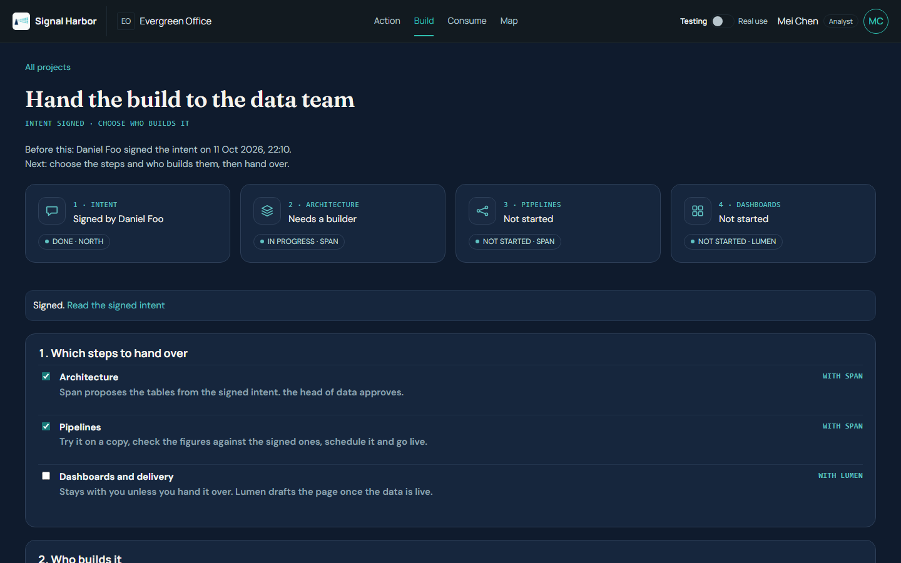
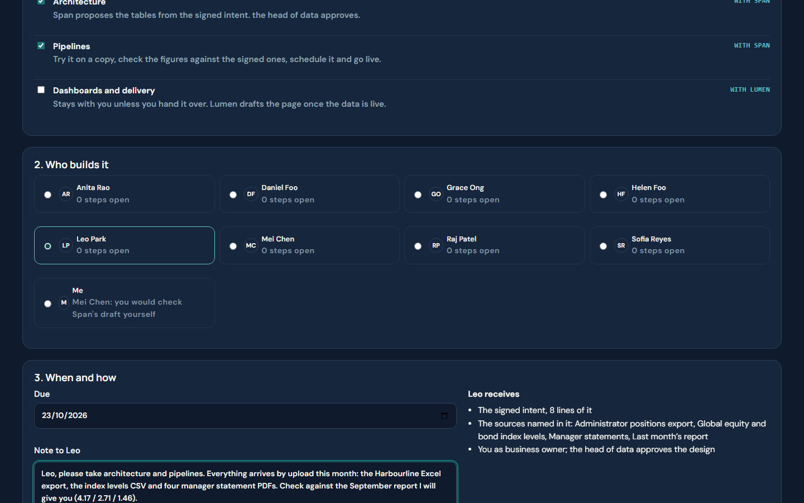
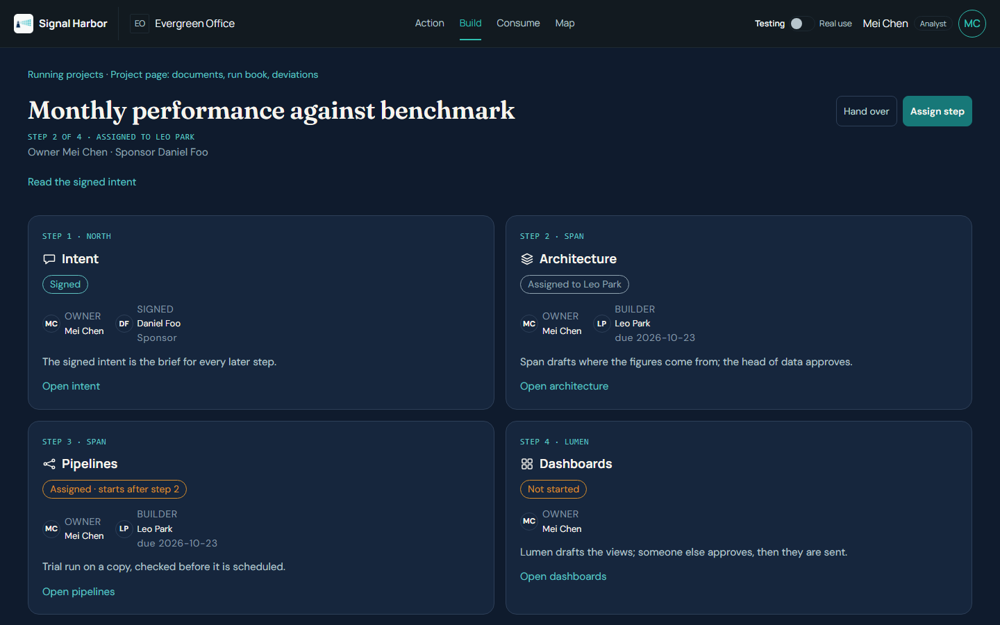
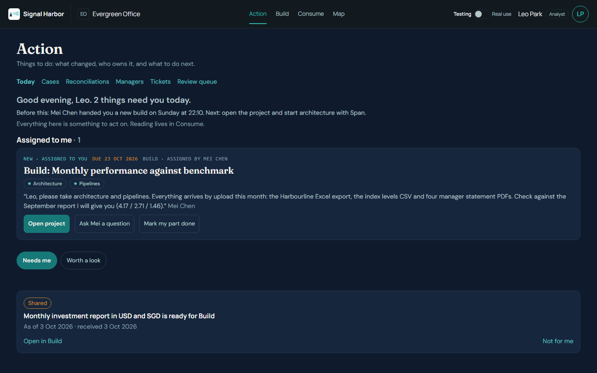
06 · Architecture: what I already know, confirm the systems
Leo Park (data engineer), with Span the architect (agent)
Intended
Span reads the signed intent and shows each source as the intent recorded it; Leo confirms rather than re-entering.
What we did
Leo opened the project's Architecture step and pressed Confirm on each of the four sources.
What happened
Span: 'I read the signed intent and the process map (5 steps). I scanned what already arrives. I only need to ask you 6 things.' The four sources (administrator positions export, index levels, manager statements, last month's report) carry 'from the intent' with how and when they arrive (upload, monthly); the three signed figures are listed. All four confirmed; status 'Never seen', nothing landed yet. Last month's report is listed as a source like the others, not as the benchmark to check against.
Time taken
16 s
If it goes wrong
Leo presses 'This is different' and corrects the channel; the intent's system map and the pack change together. Mei answers if the source itself is wrong.

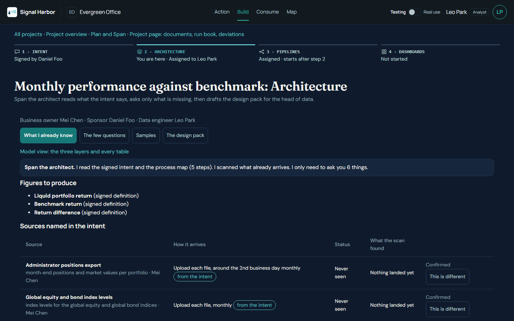
07 · Architecture: the few questions
Leo Park (data engineer), with Span the architect (agent)
Intended
Span asks only what the intent and the scan cannot answer, each with a proposed default; Leo accepts or edits.
What we did
Span asked four questions (grain, history, checks, freshness). Leo wanted the grain 'monthly by portfolio' instead of Span's 'monthly by entity'; the screen offers only Accept for grain, so he pressed Accept all and continue (history: none beyond values by date; checks: loaded total equals the source footer; freshness: 06:00 monthly, by the 5th business day), then re-answered the grain as 'monthly by portfolio' outside the screen, because the screen has no way to edit it (typing it as plain text was refused: 'That answer does not fit the question.').
What happened
All four answered, grain now by portfolio. Span did not ask again for sources, definitions or access, which the intent already held. The two PDF sources remain open as 'mark the fields' sample questions.
Time taken
21 s
If it goes wrong
Leo re-answers a question; Anita Rao (head of data) settles a disputed grain or check at pack approval.
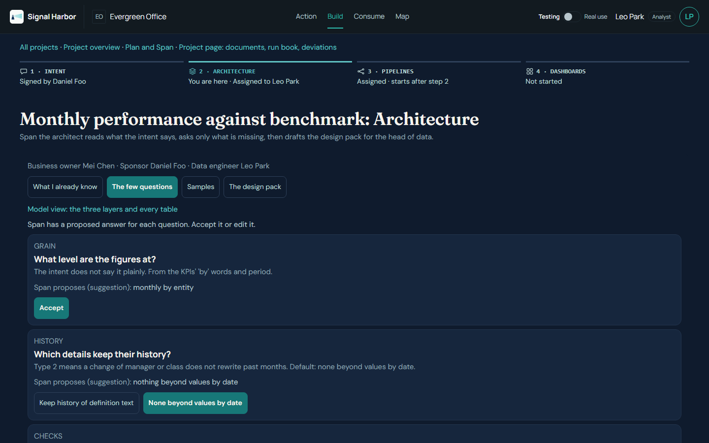
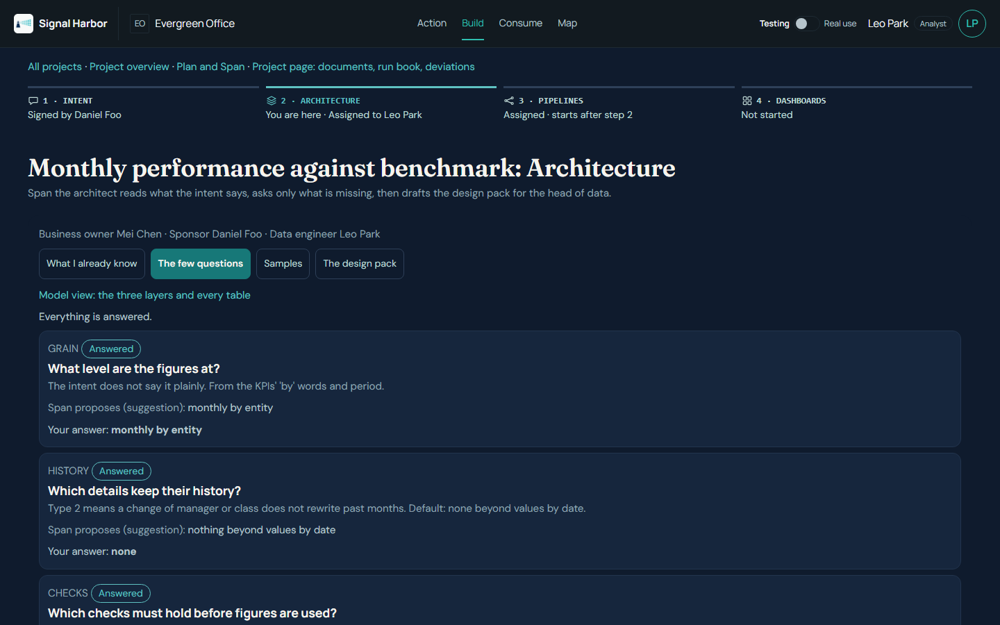
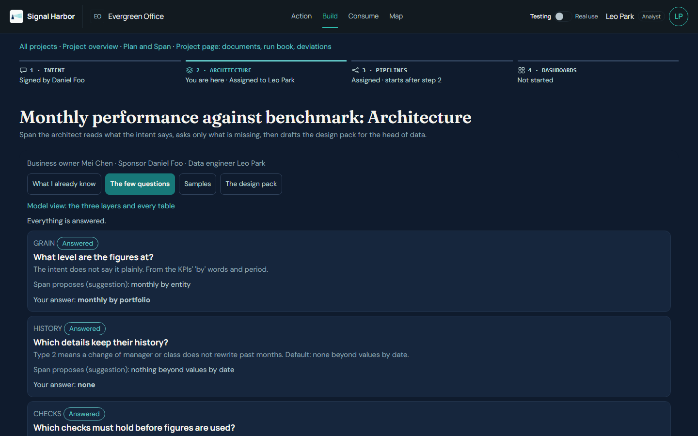
08 · Architecture: samples (upload the Excel, mark the PDF fields)
Leo Park (data engineer), with Span the architect (agent)
Intended
Show Span one file of each never-seen source and mark, once, the fields to read on the PDFs.
What we did
Leo chose the files on the Samples tab: the Harbourline positions export (.xlsx) and the index levels (.csv); then the Evergreen Growth I statement (PDF) and marked fund_name, statement_date and net_asset_value on their lines; then last month's report (PDF) and marked portfolio_return, benchmark_return and difference.
What happened
Span profiled both tables and proposed where each column goes (e.g. Market Value to position_snapshots.source_market_value, date to market_observations.observed_at); 'to confirm' on Admin Code, Price, Valuation Status, Valuation Date and on both index columns. The statement shows 'Net asset value: 10,180,000' and the marks are listed: 'Span will read these from every statement.' The first PDFs, laid out as two-column tables, could not be marked (each cell became its own line); they were re-issued with one 'label: value' line each.
Time taken
53 s
If it goes wrong
Leo re-marks a field; if the statement layout changes, Mei asks the manager for the standard statement; Anita reviews the mapping at approval.
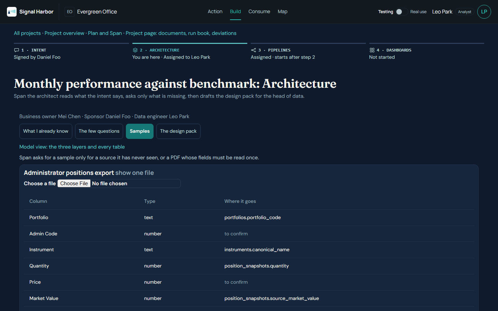
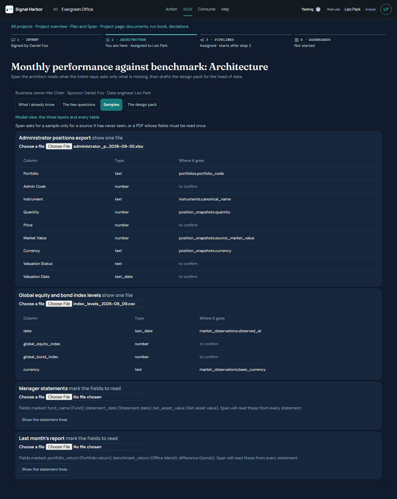
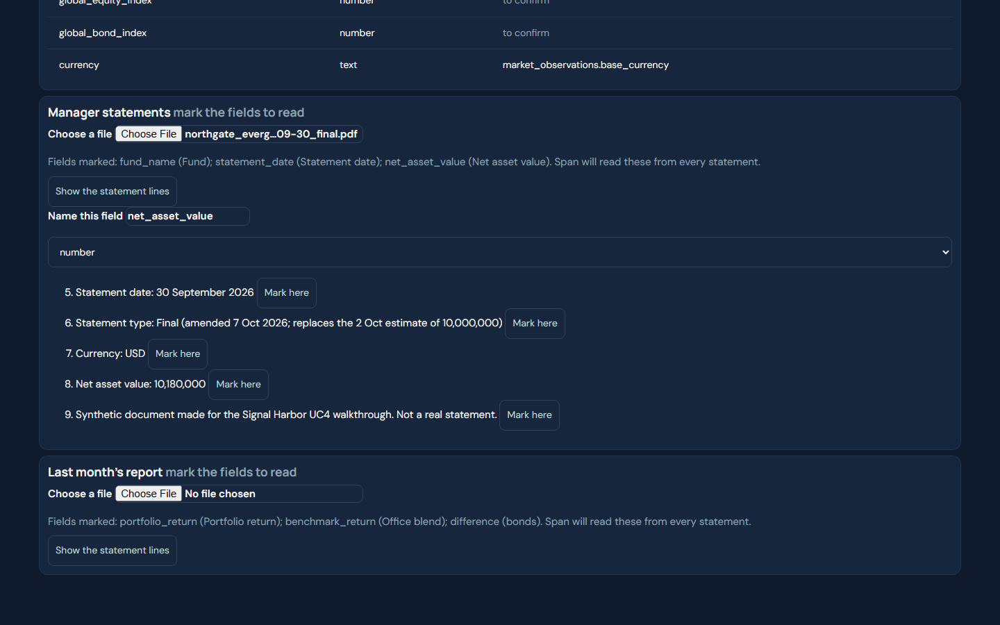
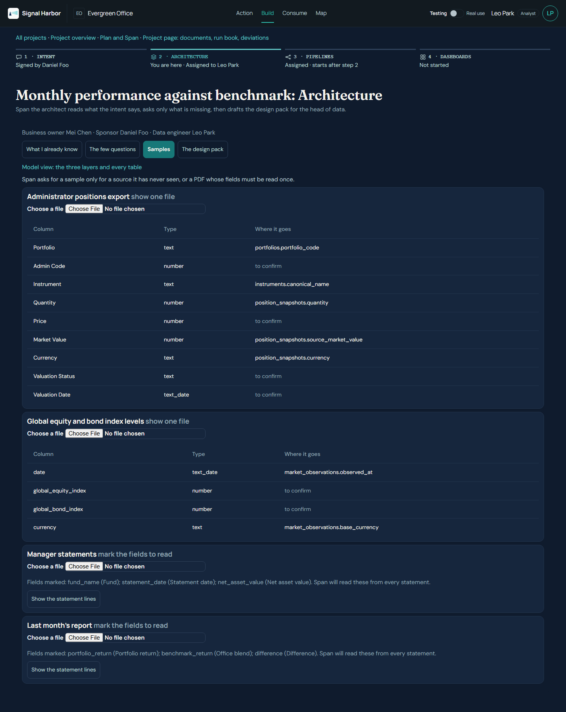
09 · Architecture: the design pack and the mapping sheet
Leo Park (data engineer), with Span the architect (agent)
Intended
Span drafts one versioned design pack (target model, catalogue, mapping sheet, rules, sources, benchmark check); Leo settles what needs a person and sends it to the head of data.
What we did
Leo pressed Draft the design pack, read the Target model, Catalogue, ETL mapping sheet, Rules and Sources tabs, settled the two open mapping rows with a note each, and pressed Send to the head of data for approval.
What happened
Pack version 1: 4 sources, 2 gold and 5 silver tables, 19 mapping rows (2 open), 1 check. Gold: returns by portfolio and month (portfolio_return, benchmark_return, difference as DECIMAL(9,6)) and the weight of each benchmark leg; benchmark block EG-LIQUID against EG-OFFICE-BLEND version 1 for 2026-09. The marked PDF fields map to 'Read the value after Net asset value on every statement'. The two open rows were the Excel and CSV samples ('Sample kept; map it before it feeds a table'): the gold returns are computed from the company model (position snapshots, market observations, benchmark components), not from the uploaded files, so Leo settled them in words. Gold table names are cut mid-word ('gold_monthly_performance_against_be_...'). Status: waiting for the head of data.
Time taken
31 s
If it goes wrong
Leo corrects a line (a new version); Span redrafts from the latest answers; Anita Rao rejects with a note if the model is wrong.

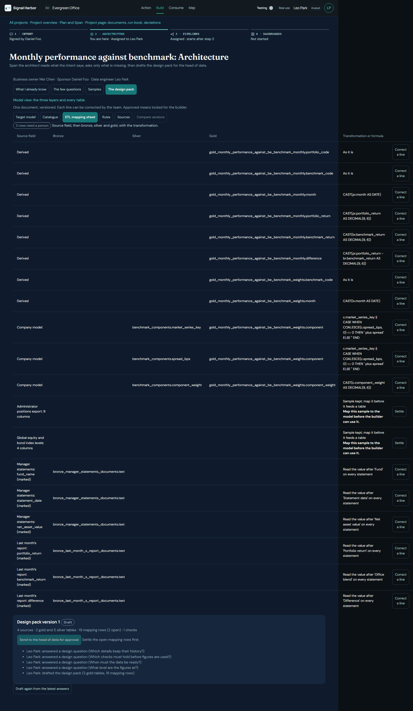
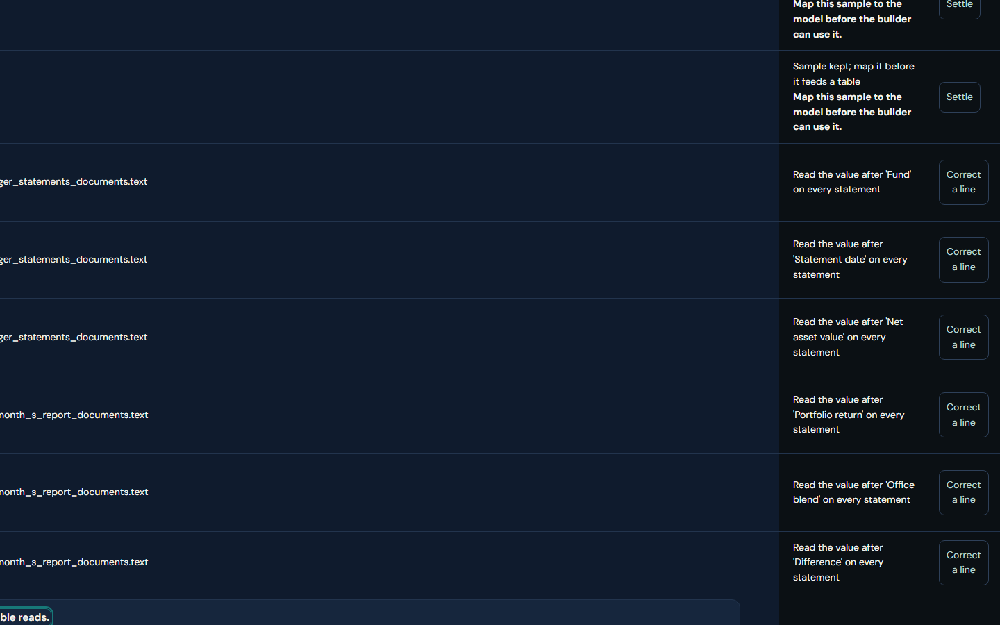
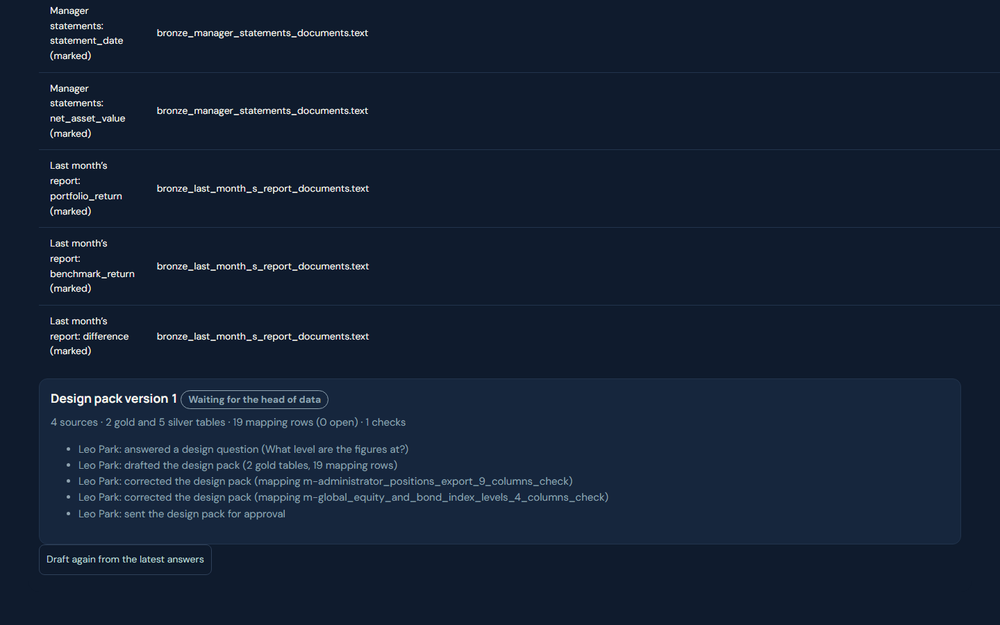
10 · Anita approves the design pack (and the build plan)
Anita Rao (head of data), Leo Park (data engineer)
Intended
The head of data approves the pack; approved means locked for the builder.
What we did
Anita opened Action ('Design pack v1: Monthly performance against benchmark', from Leo Park), reviewed the pack and pressed Approve version 1. Leo pressed Draw the build plan from this pack. Anita then approved the plan drawn from it ('the builder may try it on a copy').
What happened
'Approved by Anita Rao. Locked for the builder; the team can still edit it through a new version.' Plan version 1 drawn from pack version 1 and approved; plan state 'built'. The product asks the head of data to approve twice (the pack, then the plan drawn from it), where the agreed flow has one approval. (The screens for drawing the plan and for approving it repeated earlier captures, so one plan screen is shown.)
Time taken
57 s
If it goes wrong
Anita rejects with a note; Leo corrects the pack and resubmits. The maker cannot approve their own version.
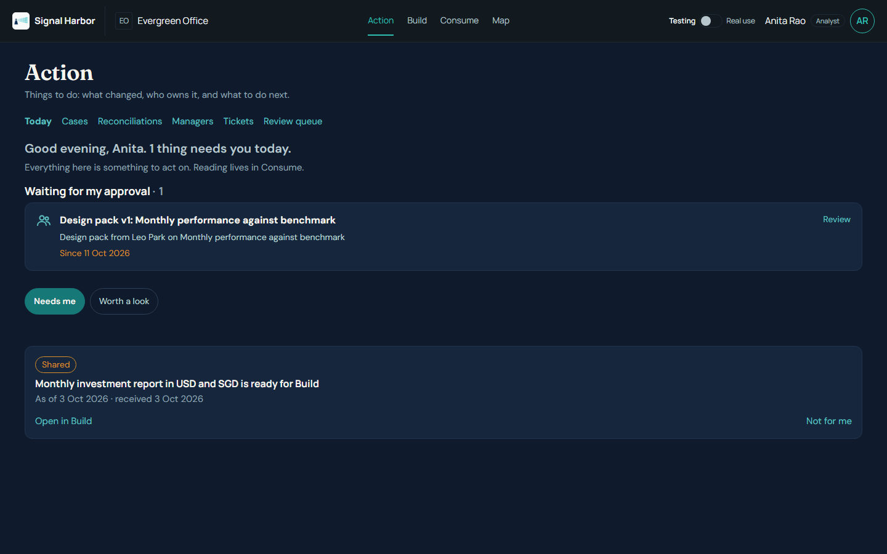
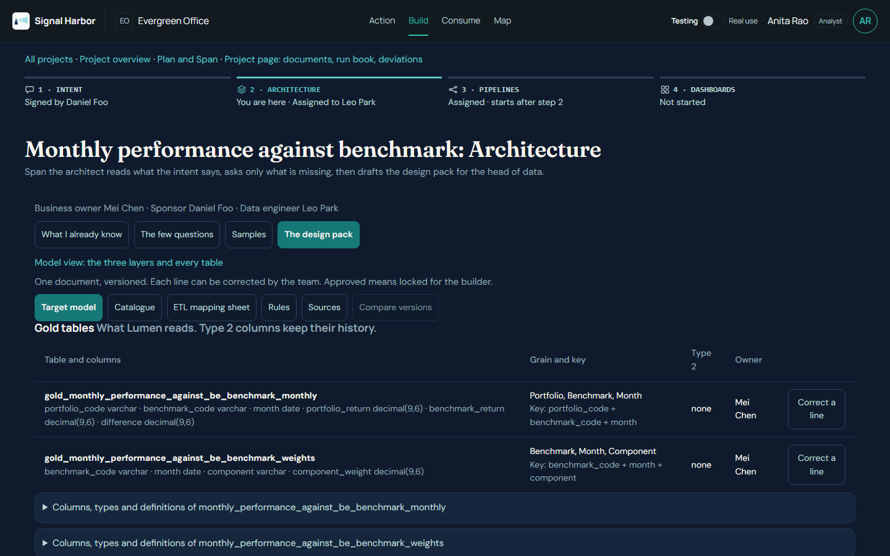
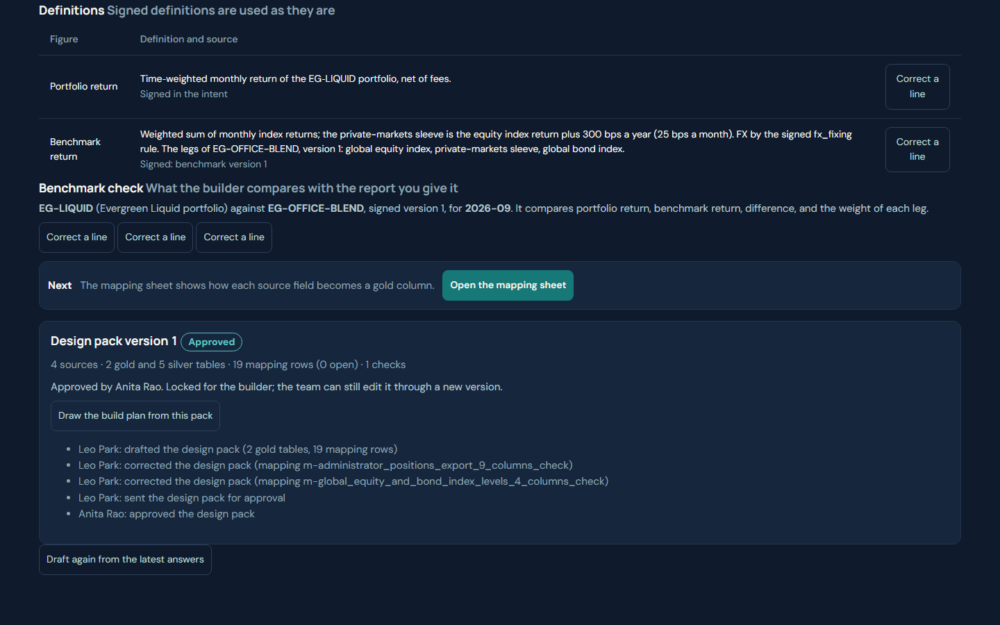
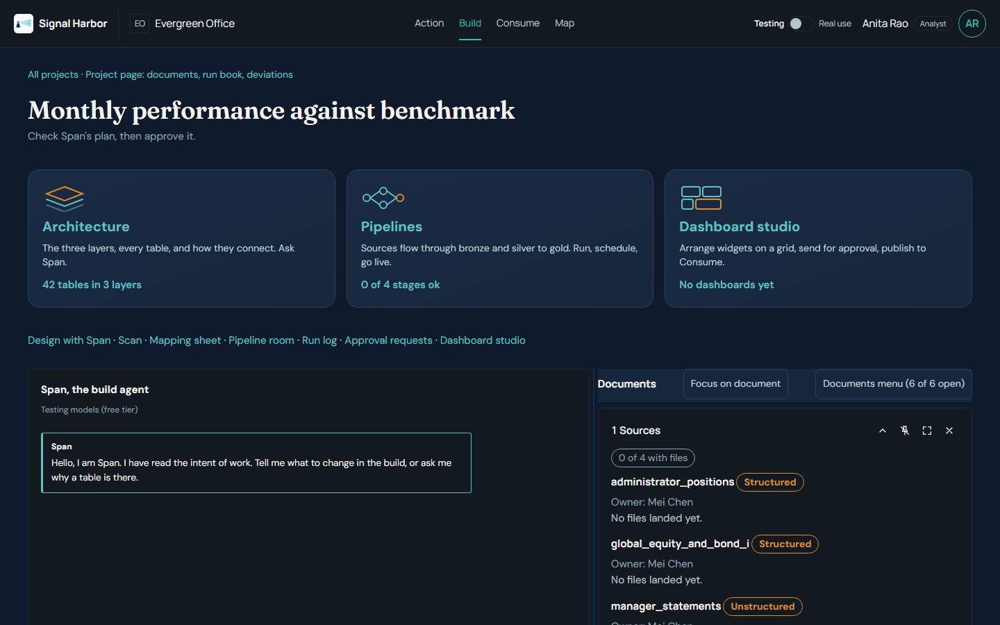
11 · Pipelines: connect and run on a copy (automatic)
Leo Park (data engineer), with Span the builder (agent)
Intended
The builder connects each source exactly as the pack says (uploads this month) and runs the pipeline on a copy without waiting for a click.
What we did
Leo opened Pipelines. Nothing was clicked: the builder had already started when the plan was approved.
What happened
Span the builder: 'I took design pack version 1 as it was approved. I connect each source as it says and run on a copy. I only come back to you when something fails.' 4 of 4 connected (the positions export and index CSV that landed as samples; the marked fields 'from each statement (104 on file for the company)'). Run on a copy: Done, started by itself at 22:18. 6 tables built (4 bronze, 0 silver, 2 gold), 60 gold rows, checks 0 of 1 (control totals against the source files). The bronze tables say 'no mapping is approved yet'. The three other manager statements were not landed: Pipelines has no upload for this month's files, the Architecture sample takes one PDF per source, and the company intake page takes only Excel or CSV.
Time taken
13 s
If it goes wrong
The builder comes back to Leo when a connection fails; Mei provides a missing file; Anita decides if a source must change (a new pack version).
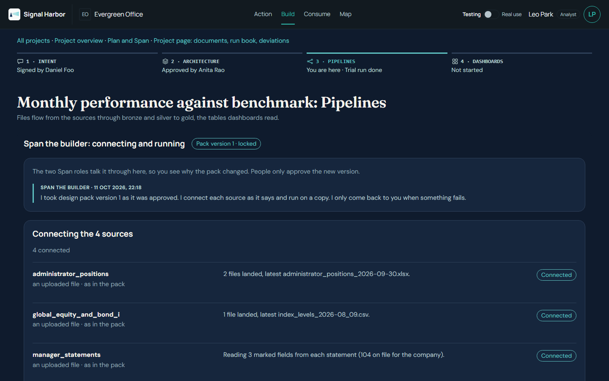
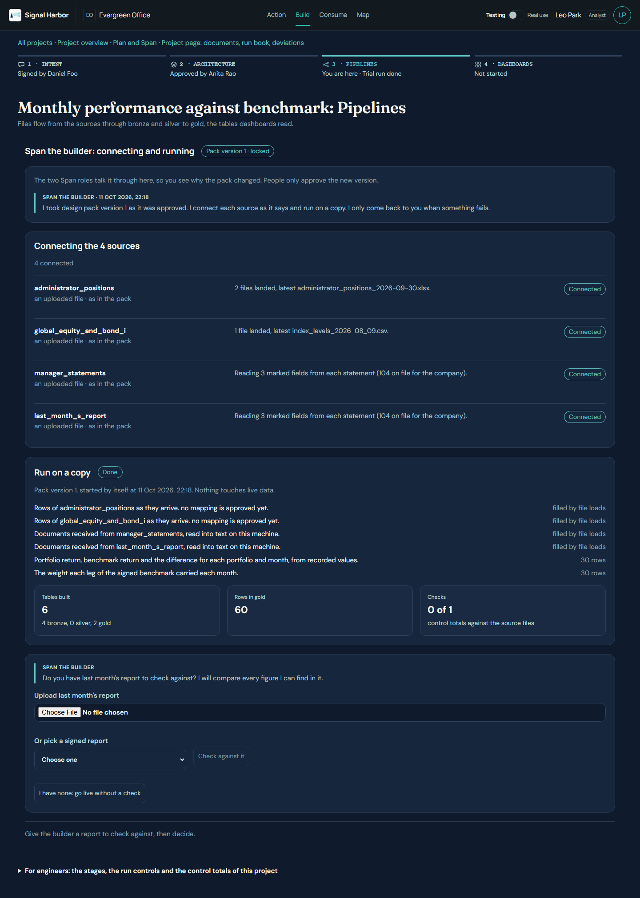
12 · Pipelines: benchmark request and variance
Leo Park (data engineer), with Span the builder (agent)
Intended
The builder asks for last month's report, reads it and compares every figure it can find with the run, line by line.
What we did
Span asked: 'Do you have last month's report to check against? I will compare every figure I can find in it.' Leo uploaded the September report as issued (PDF).
What happened
'Check against monthly_performance_report_2026-09.pdf: Variance cleared.' Portfolio return 4.17% against 4.17% (run 4.1667), Office blend 2.71% against 2.71% (run 2.7072), Difference 1.46% against 1.46% (run 1.4595), all Matches; legs: global equity 42%, global bond 28%, private-markets sleeve 30%, all Matches. 'Looks good. Going live uses the schedule in the pack: every month at 06:00.' There was no variance, so 'Send back to the architect' was not offered.
Time taken
19 s
If it goes wrong
On an unexplained line Leo sends it back to Span the architect with the evidence; the architect issues the next pack version for Anita Rao to approve; the builder reruns by itself.

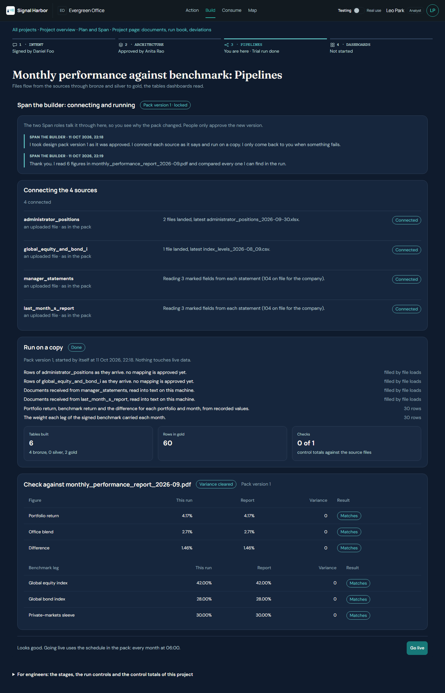
13 · Pack version 2: Leo corrects the definitions
Leo Park (data engineer), as Span the architect's reviewer
Intended
With no variance to send back, Leo reads the approved pack once more before going live and corrects what is wrong through a new version.
What we did
In the gold columns, Leo pressed Correct a line on four definitions: portfolio_code and benchmark_code (both tables) carried the text of a return KPI ('Time-weighted monthly return of the EG-LIQUID portfolio, net of fees'), and the difference column did not say its unit or that the signed intent text disagrees. He opened Compare versions (1 to 2) and sent version 2 to the head of data.
What happened
Correcting an approved pack forked version 2 as a draft (version 1 stays locked). Compare versions lists the four changes, old text struck through. Version 2: waiting for the head of data. The 'Send back to the architect' path was not exercised in this walk because the first run matched the report.
Time taken
28 s
If it goes wrong
Anita Rao rejects version 2 with a note; version 1 stays the approved one.
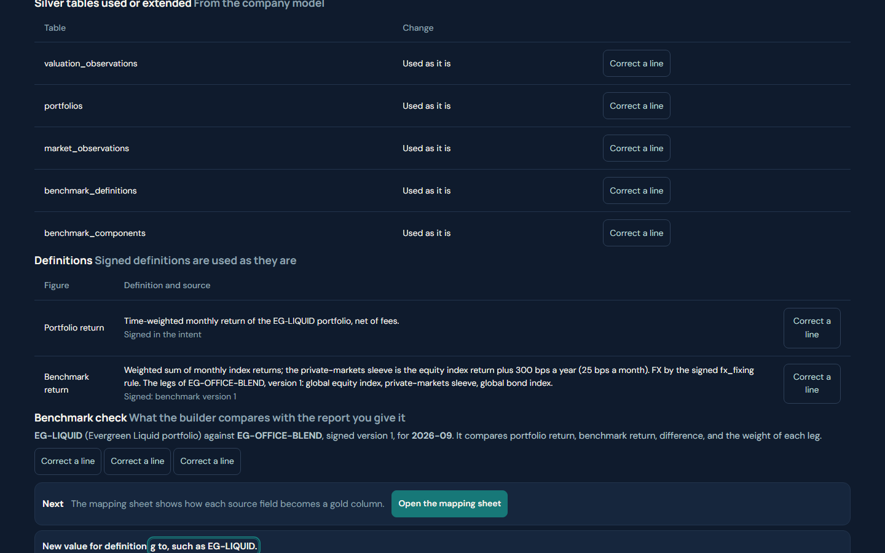
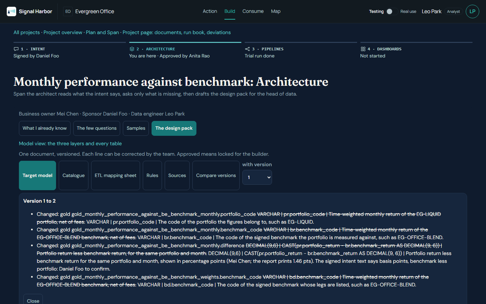
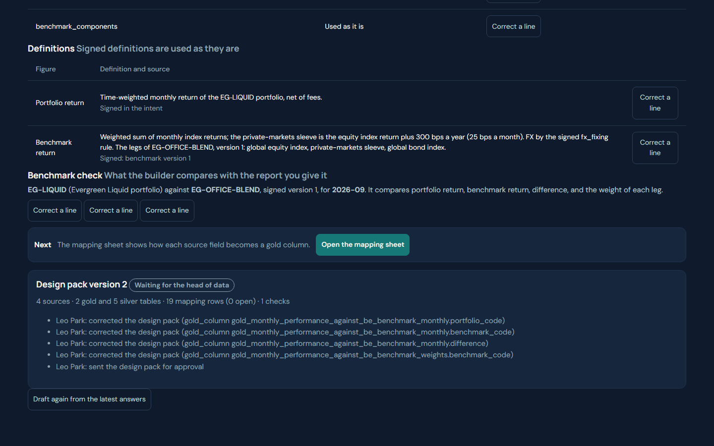
14 · Approve pack version 2; the builder reruns by itself
Anita Rao (head of data), Leo Park (data engineer), with Span the builder (agent)
Intended
The head of data approves the new version; the builder reruns on a copy without being asked and checks the report again.
What we did
Anita pressed Approve version 2; Leo drew plan version 2 from it; Anita approved the plan ('Plan version 2 from pack version 2 (definitions only)'). Leo reopened Pipelines.
What happened
Pack version 2 approved and locked. The builder ran pack version 2 on a copy by itself and checked it against the same report: 'Variance cleared', Pack version 2, the three figures and three legs all Matches.
Time taken
59 s
If it goes wrong
If the rerun fails or a line no longer matches, the builder holds it and Leo sends it back to the architect; Anita approves the fix.
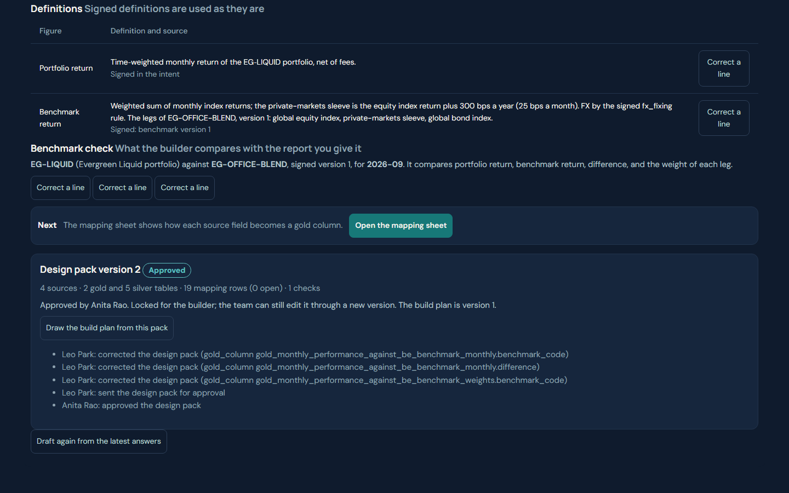
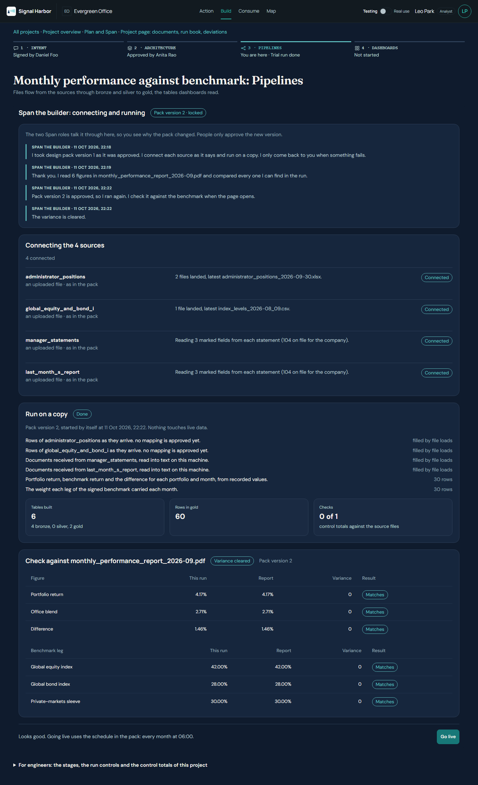
15 · Go live
Leo Park (data engineer), with Span the builder (agent)
Intended
With the check clean, take the pipeline live on the pack's schedule.
What we did
Leo pressed Go live on the Pipelines step.
What happened
The round is live: 'Live on the pack schedule, every month at 06:00. Lumen proposes a starter dashboard.' The builder hands on to Lumen for a starter dashboard.
Time taken
18 s
If it goes wrong
Leo or Anita Rao stops the schedule; a failed scheduled run comes back to Leo in Action.
16 · Lumen's starter dashboard
Mei Chen (business owner), with Lumen (agent)
Intended
When the pipeline goes live, Lumen proposes a starter dashboard from the intent's figures, readers and breakdowns, so nothing is built from scratch.
What we did
Mei opened the Dashboards step: 'Lumen's starter dashboard, Draft, version 1, 6 widgets, made by Lumen', and opened it in the studio.
What happened
Lumen: 'The pipeline is live. I put this together from the signed intent so nothing has to be built from scratch... It reads gold, pack version 2.' Tiles: Portfolio return in the latest month, EG-LIQUID only, 4.17% (twice, the same tile); a monthly trend of liquid portfolio return against benchmark return (axis in fractions, -0.02 to 0.04); portfolio return by portfolio code (all four portfolios, bars down to about -50%); portfolio return by benchmark code (one bar near -90%); a checks status line ('2 of 6 steps ok'). No benchmark return or difference figure tile, although the intent names both. The refresh line reads 'day 5 of each month at 06:00; next 5 Nov 2026'.
Time taken
20 s
If it goes wrong
Mei removes or asks Lumen to change a tile; Leo checks a figure that does not match gold ('Where is this from?').
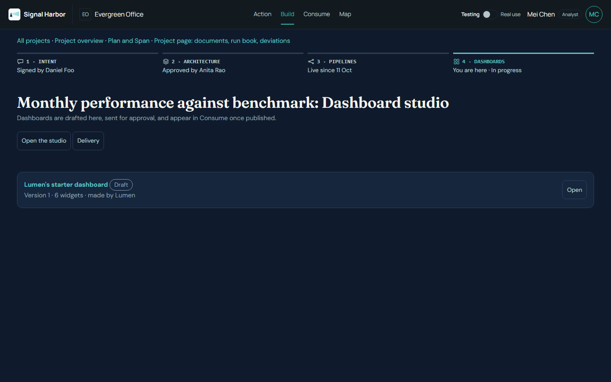

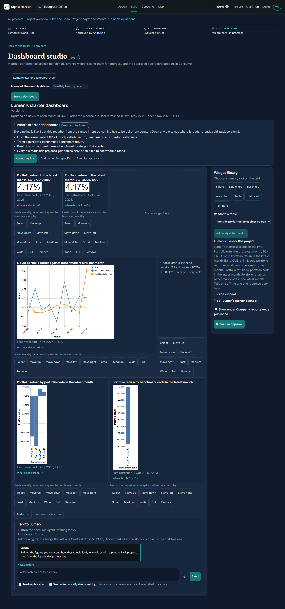
17 · Mei adds one specific tile
Mei Chen (business owner), with Lumen (agent)
Intended
Mei asks Lumen for one specific addition, the difference in percentage points for the latest month, and accepts it onto the starter.
What we did
Mei asked Lumen in the studio's Talk to Lumen: 'Add one figure tile: the difference between the EG-LIQUID portfolio return and the EG-OFFICE-BLEND benchmark return in the latest month, in percentage points.' (twice, once with the starter opened by its own link). Then she used the widget library (empty slot, Figure, table '...benchmark monthly', Add widget to the slot). Then she tried to select that tile and ask Lumen to turn it into the difference.
What happened
Lumen replied 'I have proposed one tile, Difference at the latest date, EG-LIQUID and EG-OFFICE-BLEND only. It is waiting for you: accept it or choose Not this.', but no Accept button appeared: each ask placed the proposal on a new, empty personal 'My dashboard' (three were made), not on the starter the studio shows. The widget library added a figure 'Portfolio return' (the first column), not the difference, and offers no column choice. Selecting the tile did not register, and Lumen's next reply went off topic ('...I am holding off on the chart request to focus solely on the approval workflow'). The requested difference tile was NOT added; the starter carries one extra 'Portfolio return' figure.
Time taken
4 min 47 s
If it goes wrong
Leo Park adds the tile in the studio from the gold column; the Lumen defect goes to the product team.
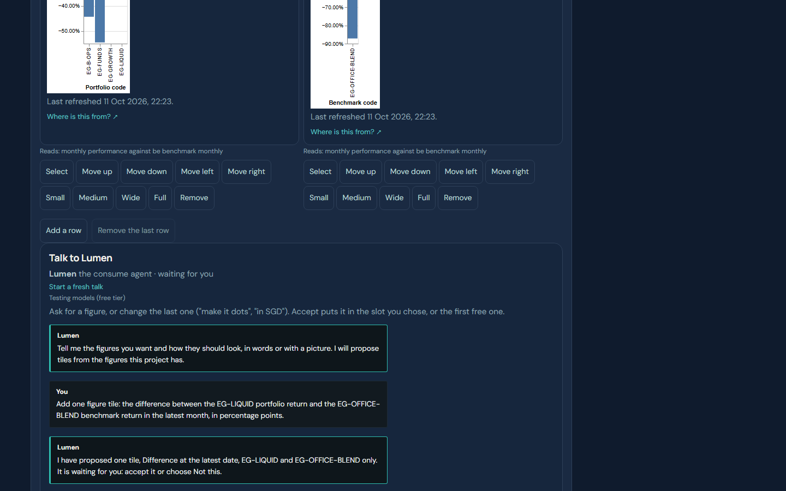
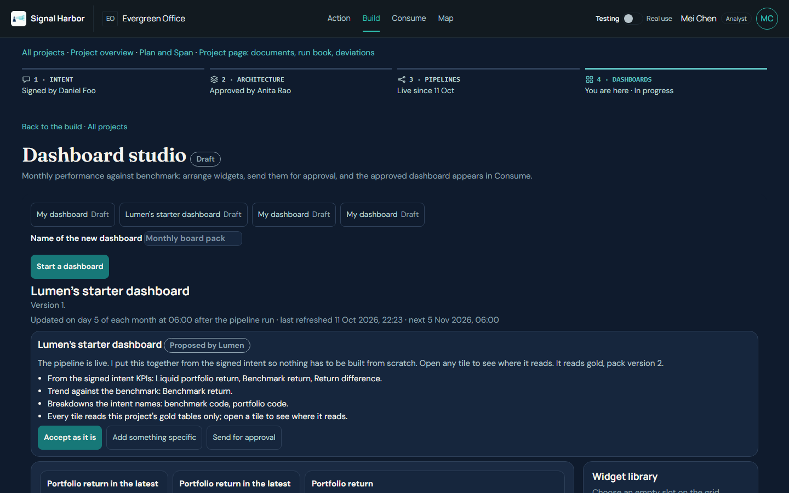
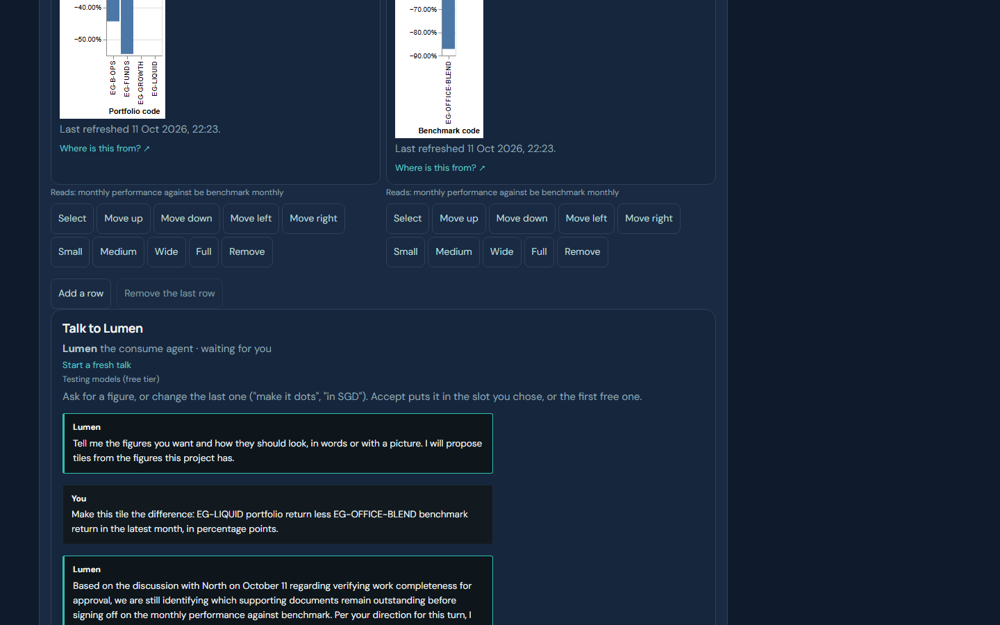
18 · Daniel approves the dashboard
Mei Chen, then Daniel Foo (sponsor)
Intended
Mei sends the dashboard for approval; someone other than its maker approves it.
What we did
Mei pressed Send for approval on the starter. Daniel opened Action, then the dashboard, read 'What Lumen checked' and pressed Approve.
What happened
Daniel's Action showed 'Dashboard: Lumen's starter dashboard, from Mei Chen'. 'What Lumen checked': tiles name their source (checked); readers are the project's people (checked); but 'The month's numbers - not checked: No reviewed run is on record for this project' and 'The benchmark is the signed definition - not checked: No signed benchmark version is on record', although the builder's check matched the report and EG-OFFICE-BLEND version 1 is signed. Daniel approved; the dashboard is published.
Time taken
45 s
If it goes wrong
Daniel sends it back with a reason; Mei changes the tiles and sends it again.
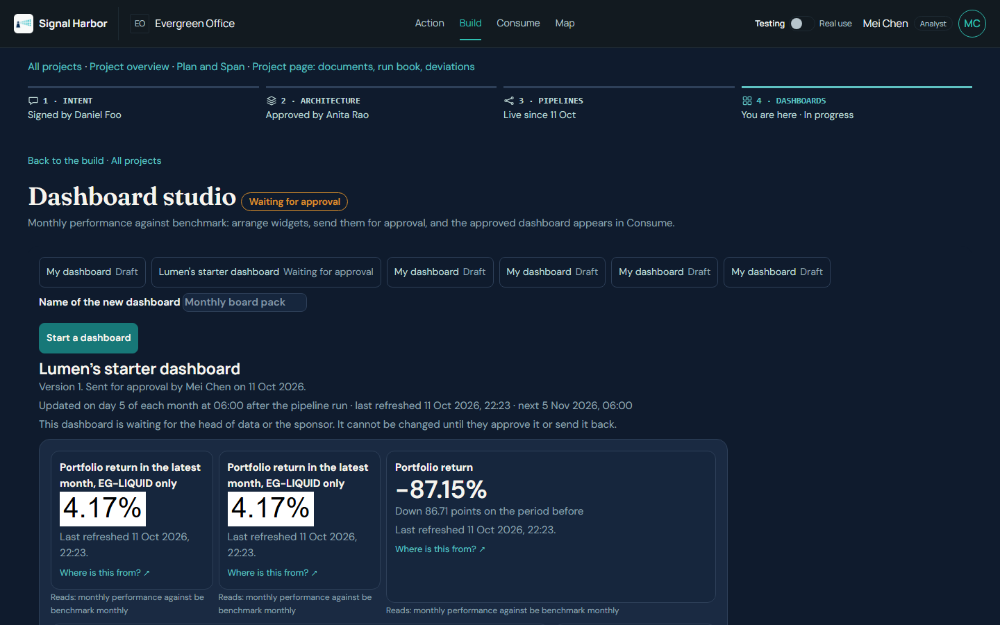
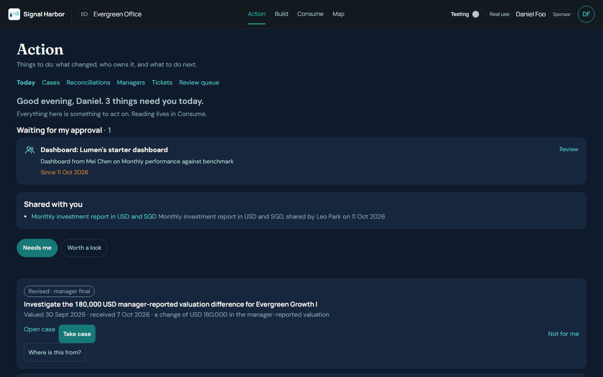
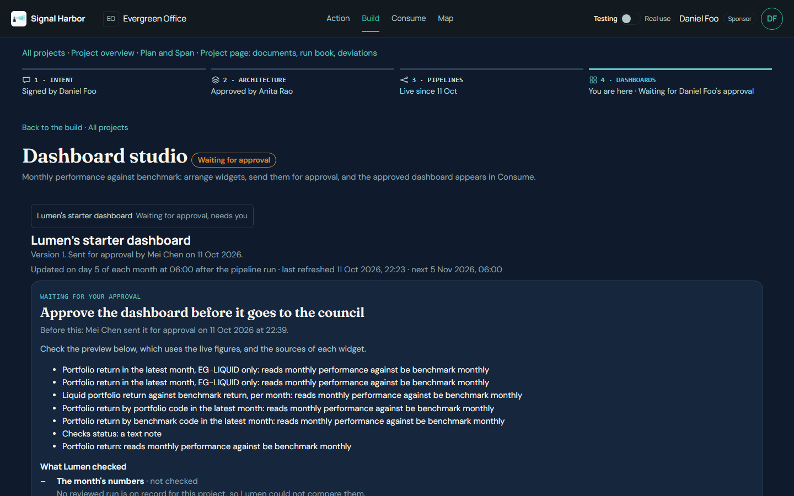

19 · Delivery: Consume and the council email
Mei Chen (business owner), Daniel Foo (sponsor)
Intended
Mei chooses where the approved dashboard goes (Consume and a monthly email digest to the council); someone else approves each channel; then delivery goes live.
What we did
Mei added Consume and an Email digest (monthly, 07:00, to family.council@evergreen-office.example.test, a synthetic address), opened the email Preview and sent both for approval; Daniel approved both; Mei pressed Go live.
What happened
Both channels approved and live. The email preview (subject 'Lumen's starter dashboard: portfolio return 0.0417') lists each tile in words, e.g. 'Portfolio return in the latest month, EG-LIQUID only: portfolio return 0.0417' and 'Portfolio return by benchmark code in the latest month: benchmark code EG-OFFICE-BLEND, portfolio return -0.8715'. Figures are raw fractions, not percentages, and the implausible bar values travel into the email. The outbox is empty: 'Nothing is sent when you press Go live'; the first message goes at the next scheduled time, so no sent email could be shown. The first attempt left the email channel in draft (only Consume was submitted); it was submitted and approved on a second pass.
Time taken
2 min 01 s
If it goes wrong
Daniel sends a channel back with a reason, or Mei stops it; a failed send stays in the outbox with Send again.

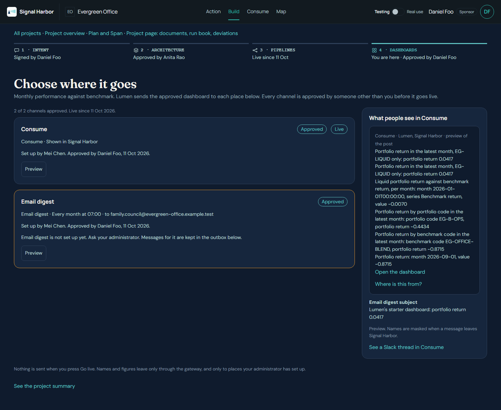
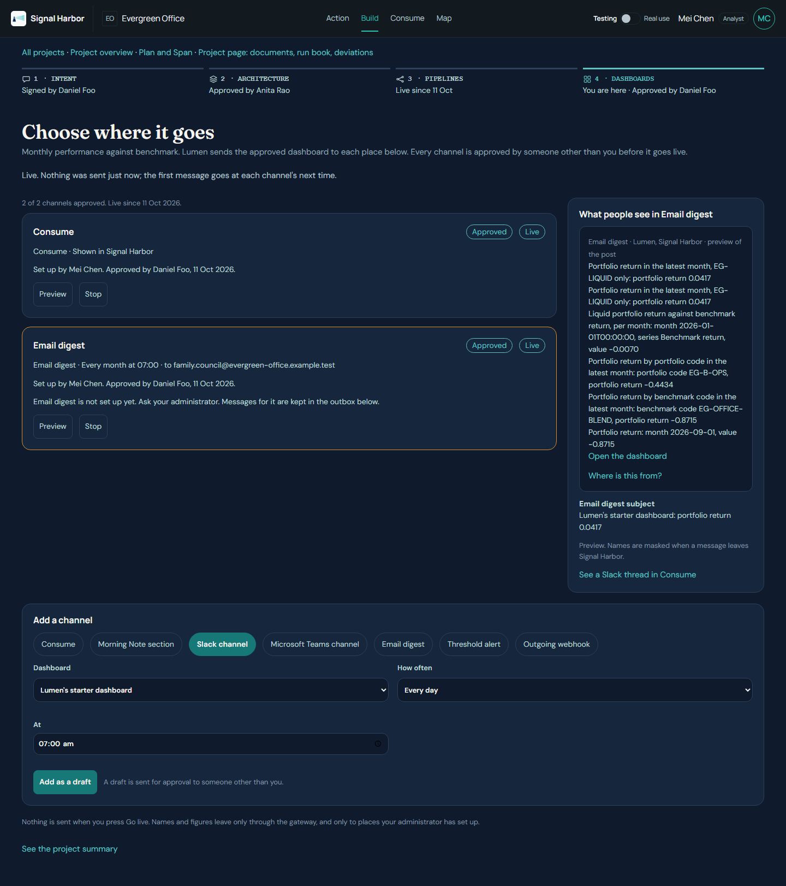
20 · Project complete
Mei Chen (business owner)
Intended
The project's complete page records who signed, approved and delivered what, and adds the work to the company knowledge map.
What we did
Mei opened the project's complete page.
What happened
'PROJECT COMPLETE - 11 OCT 2026. Monthly performance against benchmark is live. Lumen now runs it; you only hear from it when something needs you.' Intent signed by Daniel Foo; architecture approved by Anita Rao; pipelines 'Live, started by Leo Park after a clean check'; dashboards 'Approved and delivered to 2 channels'. Added to the company knowledge map: 10 items (4 sources, 2 gold tables, the dashboard, Mei as owner, Daniel as sponsor, Leo as builder), each verified only where a record says so.
Time taken
20 s
If it goes wrong
Anita Rao (head of data) reopens a step; Daniel Foo stops delivery.
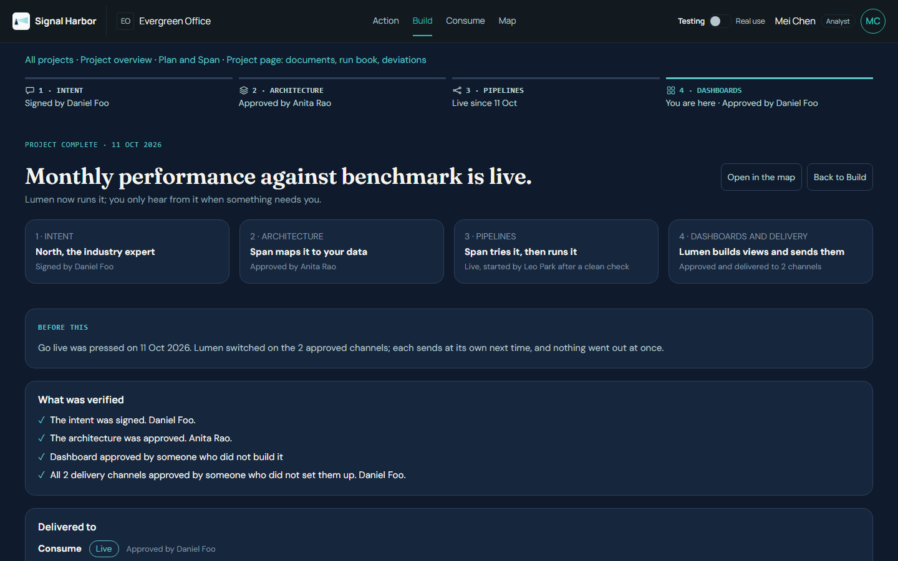
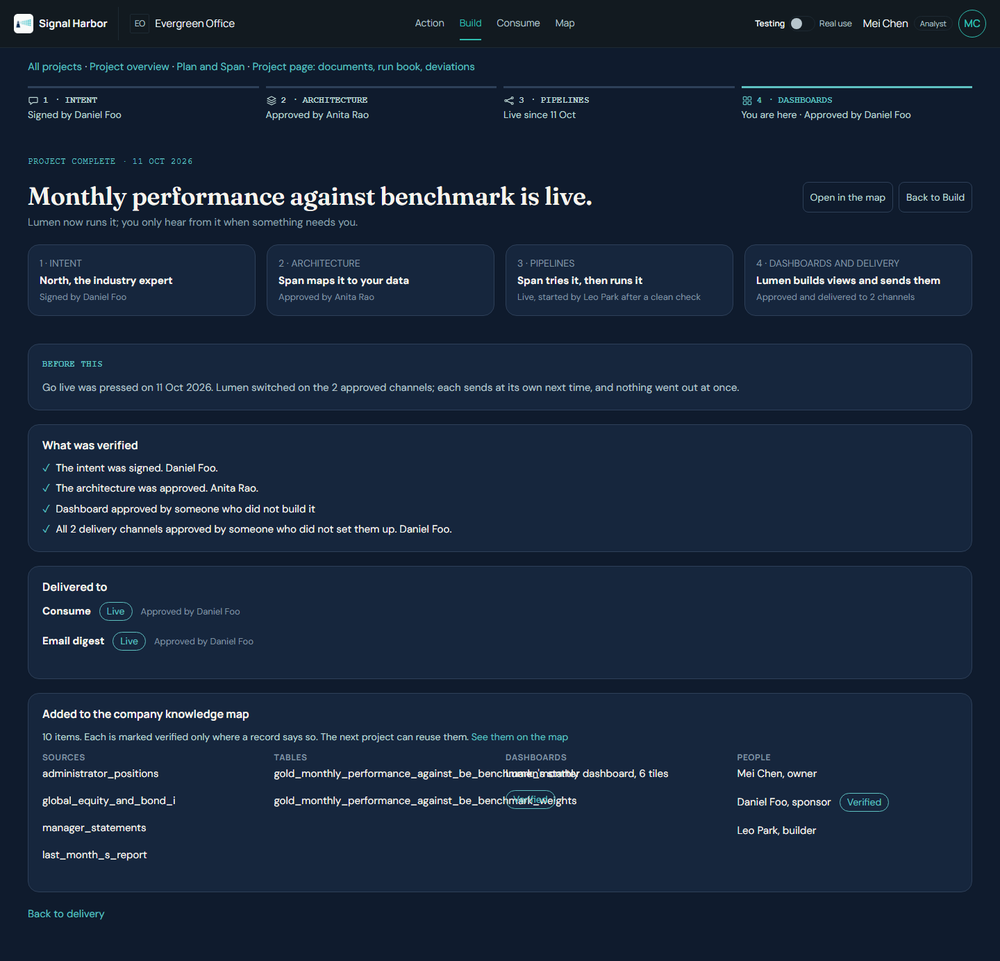
21 · Consume and the Map show the result
Daniel Foo (sponsor), Anita Rao (head of data)
Intended
Daniel reads the result in Consume; Anita sees the project, its sources and tables on the company map.
What we did
Daniel opened Consume, its Dashboards list and Shared with you. Anita opened the Map and the project on it.
What happened
Consume's Morning Note reads 'The Evergreen Liquid portfolio returned 4.17% in September, 1.46 points ahead of its benchmark' with a Certified tile 'Liquid book, September 4.17%, Benchmark 2.71% +1.46 pts' (the same figures the pipeline matched). But the new dashboard is not listed under Consume > Dashboards or Shared with you, for Daniel or Mei, although its Consume channel is approved and live; only the earlier project's dashboard shows. The Map lists 'Monthly performance against benchmark - Live' beside the earlier project, with its sources (Administrator positions export, Global equity and bond index levels, Last month's report, Manager statements); 19 items from finished projects wait for the head of data before they join the verified map.
Time taken
39 s
If it goes wrong
Mei checks the Consume channel on the delivery page; Anita reviews the 19 waiting map items.

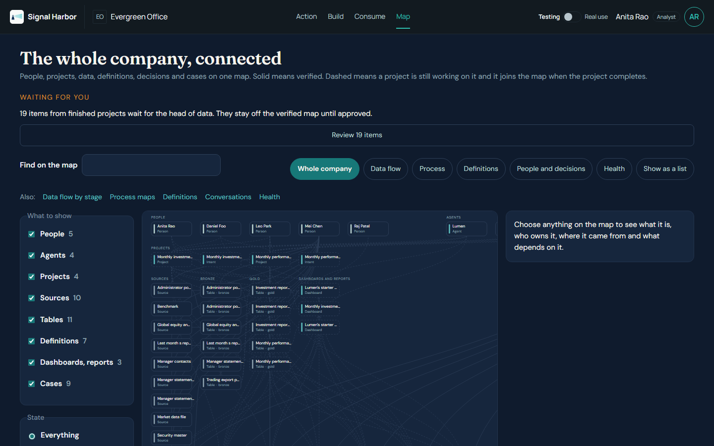
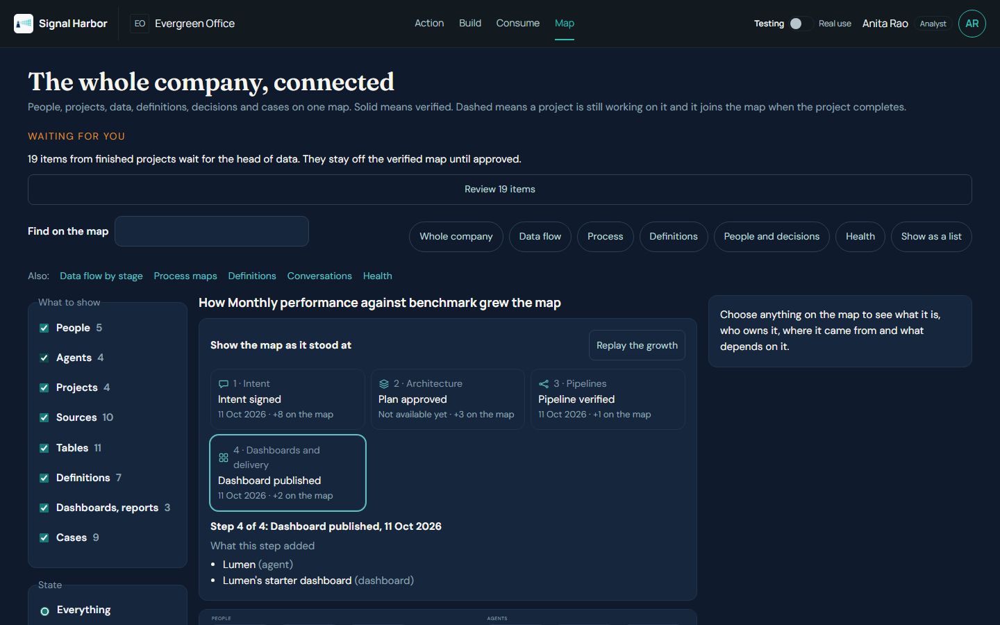
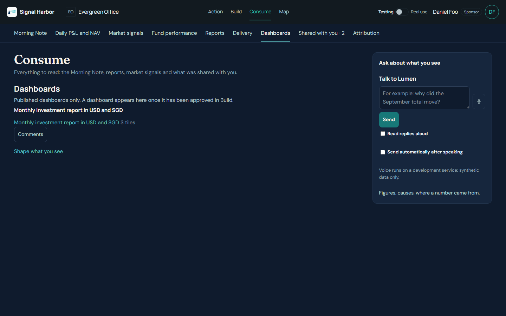
Summary
In the product, from Mei's first sentence to North (21:46 Singapore time) to delivery live (about 22:31): about 45 minutes, of which about 10 minutes were the conversation with North. The time recorded inside the 21 steps adds up to about 25 minutes; the rest was handing over between people. Each person acted only at their own points; the agents drafted, ran and checked in between. The whole walkthrough took about 63 minutes of wall-clock time: rebuilding the product screens, seeding the environment, making the sources and diagnosing the defects listed below.
Touch points per person
| Person | Steps acted in |
|---|
| Leo Park | 11 |
| Mei Chen | 9 |
| Daniel Foo | 4 |
| Anita Rao | 3 |
What the agents did, and what people did
| Agents | People |
|---|
- North: 13 model calls; asked one question per turn, drafted the intent sections, the three figure definitions and the 5-step process map, wrote the closing summary
- Span the architect: read the signed intent (never asked again for sources, channels or definitions), asked 4 questions with defaults, profiled two samples, drafted the design pack (2 gold, 5 silver tables, 19 mapping rows, benchmark block), versioned the correction and showed the comparison
- Span the builder: connected 4 sources, ran on a copy by itself at approval (6 tables, 60 gold rows), read the uploaded report and compared 6 lines (all matched), reran pack version 2 by itself and rechecked
- Lumen: proposed a starter dashboard with 6 widgets from the signed intent; listed what it checked for the approver; wrote the delivery previews
| - Mei Chen: 10 messages to North; hand-over; asked for one tile; sent the dashboard for approval; set up two delivery channels and pressed Go live
- Daniel Foo: signed the intent; approved the dashboard and both channels
- Anita Rao: approved pack version 1, its plan, pack version 2 and its plan
- Leo Park: confirmed 4 sources, answered 4 questions, gave 4 samples and marked 6 fields, settled 2 mapping rows, corrected 4 definitions, uploaded the benchmark report, pressed Go live
|
Model use
Testing mode throughout (Real use never switched on). 26 model calls, about 198,000 tokens, 0.0106 USD in total from the product's cost log (North 13 calls, 0.0066 USD; the rest Lumen and summaries). Budget was under 1 USD.
Honest findings
- High Mei's specific tile could not be added. Asking Lumen for a tile while the starter is open puts the proposal on a new hidden personal 'My dashboard' (three were made), so Lumen says it waits for Accept but no Accept appears. The widget library's Figure takes the first column (portfolio return) with no column choice; selecting a tile to change it did not register; a later Lumen reply went off topic. The difference tile was not added.
- High The delivered dashboard is missing from Consume. Approved and delivered to a live Consume channel, yet not listed under Consume > Dashboards or Shared with you for Daniel or Mei. Consume shows the same figures only through the seeded Morning Note.
- High North reversed a signed definition. The 'Return difference' figure was drafted as 'difference in basis points (benchmark - portfolio)'; Mei said portfolio minus benchmark in percentage points. The sign page did not flag it and Daniel signed it. The pack computes portfolio minus benchmark, so the signed text and the build disagree (noted in pack version 2).
- High Lumen's starter tiles are partly wrong. The same 4.17% tile twice; no tile for the benchmark return or the difference although the intent names both; by-portfolio and by-benchmark-code bars at about -50% and -90% (probably values added up across months or portfolios); trend axis in fractions next to tiles in percent; white number boxes on the dark theme. The email preview carries the same raw fractions (0.0417, -0.8715).
- Medium Approval panel says the numbers were not checked. 'What Lumen checked' shows 'No reviewed run is on record' and 'No signed benchmark version is on record' after the builder's check matched the report and with EG-OFFICE-BLEND version 1 signed.
- Medium The gold tables do not read this month's files. The pack's gold tables read the company model (positions, market observations, benchmark legs), not the uploaded Excel and CSV: both stayed 'Sample kept; map it before it feeds a table' and were settled in words. Bronze says 'no mapping is approved yet'; checks 0 of 1 after the run. The cycle proves the calculation on data already in the warehouse, not the ingestion of these files.
- Medium No place to land this month's further PDFs. Pipelines has no upload; the Architecture sample takes one PDF per source; the intake page takes only Excel or CSV. The three other manager statements were not landed. The statement count reads '104 on file for the company', not this project.
- Medium PDF tables cannot be read. The PDF reader puts each table cell on its own line, so a statement or report laid out as a two-column table cannot be marked. The walkthrough's first PDFs used tables and were re-issued with one 'label: value' line each.
- Medium North needed prompting to finish. With every required section filled North did not mark the intent ready; it asked for the version 2 weights (not needed) and wrote the closing summary only when Mei asked. The summary listed each figure as 'no source yet', kept 'who may see this' as unclear after Mei named four people, and cut the goal mid-word ('so the council can de').
- Low Grain cannot be edited on screen. The few questions offers only Accept for grain (Span proposed 'monthly by entity' for a per-portfolio figure); the change had to be entered outside the screen.
- Low Pack version 1 had copied definitions. portfolio_code and benchmark_code carried a return KPI's definition text; the Definitions panel lists 2 of the 3 signed figures. Corrected in pack version 2.
- Low Two approvals for the head of data. Anita approves the pack and then the plan drawn from it, where the agreed flow has one approval.
- Low Send-back loop not exercised. The first run matched the report (4.1667 / 2.7072 / 1.4595 against 4.17 / 2.71 / 1.46), so 'Send back to the architect' was never offered. Pack version 2 came from Leo's own correction, and the builder reran by itself.
- Low Nothing sent at go-live. Delivery's outbox stays empty after Go live (the first email waits for the schedule), so no sent message could be shown.
- Low Truncated names. Gold tables are named 'gold_monthly_performance_against_be_...' and a source 'global_equity_and_bond_i' on Pipelines.